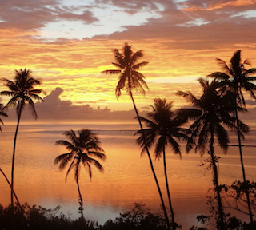

#3 places in the world to go with a beach
fiji
Fiji is a popular travel destination because it offers a blend of stunning natural beauty, unique cultural experiences, and opportunities for adventure and relaxation. The island nation boasts pristine beaches, vibrant coral reefs, and lush tropical landscapes, making it a paradise for nature lovers and water enthusiasts. Additionally, Fijian hospitality is renowned, and the island's rich culture, including traditional practices and music, provides a fascinating glimpse into a different way of life
 
bora bora
People are drawn to Bora Bora for its breathtaking natural beauty, particularly its iconic turquoise lagoon, white sand beaches, and lush tropical vegetation. Beyond relaxation, Bora Bora offers opportunities for adventure, including various water sports and snorkeling tours. While known for its beauty, Bora Bora also offers a glimpse into Polynesian culture, with traditional music, dance, and art adding an enriching layer to the experience.
the maldives
People visit the Maldives for a variety of reasons, primarily drawn to its stunning natural beauty, luxury resorts, and diverse range of activities, including water sports, diving, and relaxation.The country is comprised of 26 atolls and over 1,000 islands, offering a variety of landscapes and experiences.